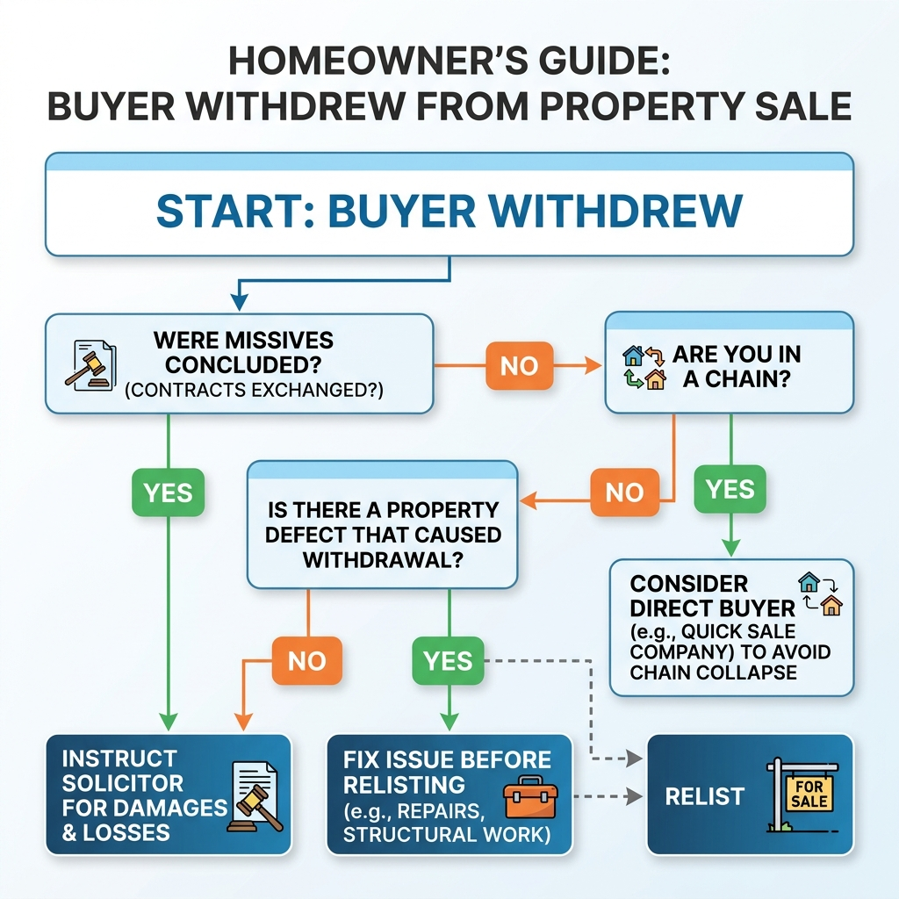

What Happens if a House Buyer Pulls Out in Scotland?
If your buyer withdraws before missives are concluded, they can generally do so without legal penalty. However, once missives are concluded, the agreement is normally binding, and a withdrawal may constitute a breach of contract with serious financial consequences. You should contact your Scottish solicitor immediately to confirm your exact rights, as they depend entirely on the specific wording and status of your transaction.
The first question: have missives been concluded?
The Scottish conveyancing system is entirely distinct from the process in England and Wales. When an offer is accepted in Scotland, it does not instantly create a legally binding contract. The "missives" are a series of formal letters exchanged between the buyer’s solicitor and the seller’s solicitor, negotiating the terms and conditions of the sale.
Only when all points are agreed and a final concluding letter is issued are the missives "concluded." This is the point of no return for both parties.
Scottish Transaction Stages: When Can a Buyer Withdraw?
| Transaction Stage | Can the Buyer Withdraw? | Possible Consequences | Seller's Immediate Action | Professional Help Required |
|---|---|---|---|---|
| Verbal interest only | Yes, freely | None | Continue marketing | Estate Agent |
| Offer submitted | Yes, before acceptance | None | Reject or seek other offers | Solicitor / Agent |
| Offer accepted (verbal/informal) | Yes | None | Await formal written offer | Solicitor |
| Qualified acceptance issued | Yes | Wasted legal/survey fees | Instruct solicitor to formally withdraw offer | Solicitor |
| Missives still being negotiated | Yes | Wasted legal fees | Prepare to relist the property | Solicitor |
| Missives concluded | Only if a suspensive condition applies | Breach of contract; damages claim likely | Instruct solicitor to issue a deadline (ultimatum) | Solicitor (Litigation) |
| Suspensive condition outstanding | Yes, if condition fails (e.g. no mortgage) | None, if correctly drafted | Relist property | Solicitor |
| Settlement imminent | No | Severe breach; heavy damages | Prepare to sue for specific implement or damages | Solicitor (Litigation) |
| Buyer fails to settle | No | Breach of contract; interest applied | Serve notice to complete; sue for losses | Solicitor (Litigation) |
Can a buyer withdraw after their offer is accepted?
Your options depend entirely on the stage of the legal process.
Accepted offer but missives are still being negotiated
If you have accepted a formal written offer but your solicitor and the buyer’s solicitor are still exchanging qualified acceptances (negotiating the finer details), a binding contract does not yet exist. The buyer can withdraw without legal penalty. You cannot claim compensation, and both parties will usually have to absorb their own solicitor costs incurred so far.
Missives have been concluded
Once missives are concluded, the buyer is legally bound to purchase the property on the agreed date of entry (settlement). If the buyer simply changes their mind or withdraws without a valid contractual reason, they are in breach of contract. Your solicitor can advise you on pursuing them for damages.
The buyer withdraws shortly before settlement
If missives are concluded and the buyer fails to provide the funds on the date of entry, they remain in breach. Most concluded missives include penalty clauses for late settlement, usually involving a high rate of interest charged daily on the outstanding purchase price. If they ultimately fail to complete, the seller can normally rescind the contract and sue for damages.
Suspensive conditions have not been satisfied
It is common for missives to be concluded "subject to" specific conditions — known in Scotland as suspensive conditions. A common example is "subject to the buyer obtaining a satisfactory offer of mortgage." If the buyer’s mortgage application is subsequently refused through no fault of their own, they may rely on this clause to withdraw without penalty, even though missives were technically concluded.
What to do immediately when your buyer pulls out
Contact your solicitor
Do not rely on what the estate agent says about liability, and do not confront the buyer directly. Ask your solicitor to confirm the exact legal status of the missives and whether any suspensive conditions apply.
Establish exactly why the buyer withdrew
Understanding the reason is vital. If they withdrew because of a personal change of circumstance, the property is fine. If they withdrew because their surveyor identified a structural defect, you must address that defect before trying to sell again.
Confirm the status of the missives
Your solicitor must formally confirm that the transaction has collapsed. Do not attempt to sell the property to anyone else until your solicitor has officially terminated the agreement with the previous buyer, otherwise you risk breaching a contract yourself.
Protect your onward purchase
If you are relying on the sale funds to buy another property, inform the solicitor handling your purchase immediately. A collapsed sale creates a broken property chain. You may need to ask the seller of your onward property for an extension, or secure bridging finance.
Calculate the immediate costs and losses
If you are entitled to claim damages, you need to track your losses. These might include ongoing mortgage payments, additional council tax, bridging loan interest, and extra legal and marketing fees.
Decide whether to remarket immediately
If the withdrawal was not related to a property defect, you should return the property to the market as soon as possible. Your Home Report must be less than 12 weeks old to do so.

Diagnostic Checklist: Why the Sale Failed and What to Do
| Reason the Sale Failed | Evidence to Obtain | Can it be Corrected? | Effect on Next Sale | Best Next Action |
|---|---|---|---|---|
| Mortgage Refusal | Buyer's solicitor confirmation | Yes, by finding a cash buyer or different lender | High, if property is deemed unmortgageable | Verify if refusal was due to buyer finances or property condition |
| Down Valuation | Lender's valuation report figure | Yes, by adjusting asking price or finding cash | Moderate; next buyer may face same valuation limit | Review pricing strategy against Home Report |
| Repair Concern | Specific survey feedback (e.g. damp, roof) | Yes, by conducting repairs before relisting | High, if issue remains unresolved | Obtain a specialist quote for the required work |
| Title Problem | Details of missing warrants or boundary issues | Yes, via solicitor or indemnity insurance | High, until legally resolved | Instruct solicitor to rectify title defects immediately |
| Chain Collapse | Confirmation of which link failed | No, outside your control | None on the property itself | Relist immediately; prioritize chain-free buyers |
| Buyer Changed Mind | Stated reason via estate agent | No | None | Relist immediately and contact previous interested parties |
| Slow Legal Process | Timeline of correspondence | Yes, by actively managing the next transaction | None | Set clear timeline expectations with solicitor for next sale |
| Attempted Late Price Reduction | The revised offer amount and justification | No | None, assuming you rejected the reduction | Relist and ensure Home Report is transparent |
| Missing Property Documentation | List of missing certificates (e.g. boiler, alterations) | Yes | Moderate, causes delays | Gather all required compliance documents before relisting |
Why do Scottish house sales fall through?
Transactions fall through for many reasons, but the most common practical causes include:
- The buyer’s mortgage application fails: Even with an agreement in principle, a lender's final underwriting can result in a refusal.
- The lender values the property below the agreed price: If a buyer offers £20,000 over the Home Report valuation, but their lender values the property at the Home Report figure, the buyer must bridge the gap in cash. If they cannot, the sale collapses.
- Home Report or specialist-survey concerns: A Category 3 rating for damp or timber rot often scares buyers away or leads to mortgage refusal. Read our guide on Scottish Home Report requirements.
- A related property chain collapses: If the buyer fails to sell their own home, they cannot proceed with the purchase of yours.
- Legal or title problems emerge: Unauthorized alterations without building warrants are a frequent cause of late-stage withdrawal.
Can you claim compensation from the buyer?
Before missives are concluded
No. If missives are not concluded, there is no contract to breach. You cannot claim compensation, even if you have suffered financial loss or lost the house you wanted to buy.
After missives are concluded
Yes, if the buyer withdraws without a valid suspensive condition, they are in breach of contract. Your solicitor can raise a court action for damages.
Losses and damages your solicitor may investigate
If you successfully sue for breach of contract, you can generally claim the difference between the price the defaulting buyer agreed to pay and the price you eventually achieve when reselling the property. You may also claim the costs of remarketing, extra legal fees, and ongoing holding costs (such as a bridging loan). A Scottish solicitor must advise you on what is recoverable.
Why compensation is not automatic
Suing a buyer is expensive and time-consuming. Furthermore, if the buyer has withdrawn because they have lost their job or gone bankrupt, they may have no assets to pay a damages award. You must weigh the legal costs against the likelihood of successful recovery.
What happens to your estate-agent and legal costs?
If a sale falls through before missives, you will normally have to pay your solicitor for the work they have done to date. Your estate agent’s fees depend on your contract. Most agents operate on a "no sale, no fee" basis, meaning you only pay marketing costs (such as photography or portal listing fees) until the property actually sells. Always check your contract.
What if you lose the property you intended to buy?
If your buyer pulls out, you will usually not be able to proceed with your onward purchase unless you secure bridging finance. If missives on your onward purchase were already concluded, you are legally bound to buy that property. In this dangerous situation, you could be sued for breach of contract by your seller, even though it was your buyer's fault. This is why Scottish solicitors try to align the conclusion of missives on both sides of a chain.
Has your buyer pulled out and left you in a chain?
If you are facing a deadline and need to secure your onward purchase, a direct off-market sale can provide the certainty you need. No chains, no waiting.
Request a confidential review after a failed saleShould you accept the previous second-best offer?
If you received multiple notes of interest or bids at a closing date, your agent should contact the underbidders immediately. The second-highest bidder may still be looking. However, bear in mind that weeks may have passed, and they may have found another property. You are under no obligation to accept their previous offer.
How to relaunch the property effectively
Contact previous interested parties
This is always the first step. It is the fastest route to a replacement sale.
Review the price and buyer feedback
If the sale fell through because of a low mortgage valuation or survey issues, you must adjust the asking price or fix the issues before remarketing. A property that returns to the market at the same price with the same problems will likely fail again.
Update the Home Report where necessary
If the property is taken off the market for more than four weeks, or if the Home Report is more than 12 weeks old from the date it was prepared, you will need a replacement or refresh report before publicly marketing it again.
Correct the issue that caused the failed sale
If the buyer pulled out due to missing building warrants for an extension, apply for a Letter of Comfort from the local council now. Do not wait for the next buyer’s solicitor to discover the same problem.
How to reduce the risk of another failed sale
When selecting your next buyer, prioritize certainty over a slightly higher price. A cash buyer or a first-time buyer with a mortgage agreed in principle is much less risky than a buyer caught in a long property chain. Ask your agent to rigorously check the funding position of the next bidder.
Estate-agent resale versus auction versus direct buyer
| Factor | Return to Open Market | Approach Previous Bidders | Property Auction | Direct Off-Market Buyer |
|---|---|---|---|---|
| Potential Price | Full market value | Slightly below previous agreed | Variable — set by bidding | Below market value |
| Speed | Months (starting again) | Fast, if still interested | 4-8 weeks from instruction | 1-4 weeks |
| Chain Exposure | High | Depends on bidder | Low (binding at hammer) | None (cash purchase) |
| Certainty | Low (history of failure) | Medium | Medium (if reserve met) | High |
| Preparation | May need new Home Report | None | Legal pack required | Sold as-is |
| Costs | Agent commission + HR refresh | Agent commission | Entry fees + commission (2-3%) | Typically none to seller |
| Best Suited To | No time pressure; clean title | Properties with strong initial interest | Unusual or unmortgageable properties | Urgency, chain repair, property defects |
| Principal Disadvantage | Risk of repeat failure | Bidders may have moved on | No price guarantee | Trade-off in price for speed |
When a direct, chain-free sale may be worth considering
An open-market resale is usually the best way to achieve the highest price. However, if your buyer has pulled out and you are facing a deadline to secure an onward purchase, or if the property has a defect that prevents mortgage lending (see our guide to selling a property with serious repair issues), a direct cash sale may be the only realistic option.
A professional cash buyer purchases properties exactly as they are. The offer will reflect the costs and risks the buyer assumes, meaning it will be below the previous agreed price. The trade-off is absolute certainty and speed.
Seven-day recovery plan after a failed sale
Frequently asked questions
Can a buyer withdraw after an offer is accepted in Scotland?
Yes, if missives have not yet been concluded, either the buyer or the seller can withdraw from the transaction without legal penalty. An accepted offer is not a binding contract until the formal exchange of legal letters (missives) is complete.
Is an accepted offer legally binding?
No. In Scotland, an accepted offer is the start of the legal negotiation process. The agreement only becomes legally binding when the solicitors issue a final concluding letter, ending the missives process.
When do missives become binding?
Missives become binding when all terms and conditions raised in the qualified acceptances have been agreed, and one solicitor issues a final formal letter concluding the bargain.
What happens if the buyer withdraws before missives?
The transaction collapses and neither party can claim compensation from the other. You will need to put the property back on the market, and both you and the buyer will usually have to pay your own solicitor and survey costs incurred so far.
What happens if the buyer withdraws after missives?
Unless they are relying on an unfulfilled suspensive condition written into the contract (such as failing to secure a mortgage), a buyer withdrawing after concluded missives is in breach of contract. The seller may pursue them for financial damages.
Can the seller claim compensation?
If the buyer breaches a concluded contract, the seller can claim compensation for losses. This usually includes the difference in price if the property is resold for less, plus additional legal, marketing and ongoing mortgage costs. However, compensation is not automatic and requires legal action.
Who pays the legal fees when a sale falls through?
If missives were not concluded, both the buyer and the seller are responsible for paying their own solicitor for the work completed to date.
Can I contact the previous second-highest bidder?
Yes. Your estate agent can contact parties who previously noted interest or submitted lower bids to see if they are still in a position to proceed.
Do I need a new Home Report?
If you are returning the property to the open market, your Home Report must be no more than 12 weeks old from the date it was prepared. If it is older, you must commission a replacement or a refresh.
Can a direct buyer purchase after a failed sale?
Yes. A cash property buying company can step in quickly, often completing the purchase without a chain, which provides certainty if you have a deadline for an onward purchase.
Compare your next sale with a direct offer
A failed property sale is incredibly frustrating, especially if it breaks a chain. If you cannot afford to wait months for another open-market buyer to secure a mortgage, you can compare an estate-agent sale with a direct buyer.
We purchase residential properties across Glasgow and Central Scotland. Tell us what happened with your previous transaction, and we will provide a confidential, no-obligation direct offer so you can understand all your options.